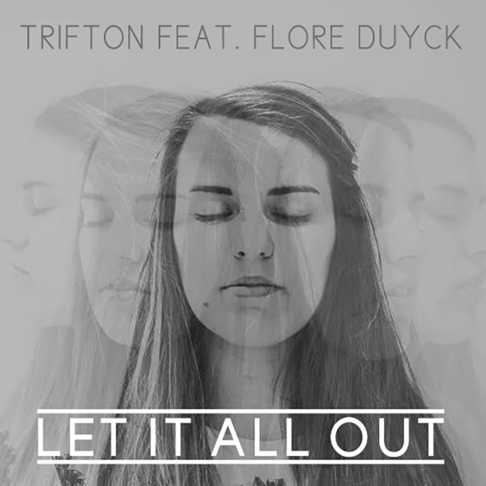

Portfolio/Let it all out

Let it all out is een nummer gemaakt door Gilles De Craene (Trifton) en gezongen door Flore Duyck. Het doel was om een opbeurend nummer te maken. Met een heel kleine selectie aan de nodige apparatuur was het niet eenvoudig om een deftig resultaat te bekomen. De stem werd opgenomen met een iphone.